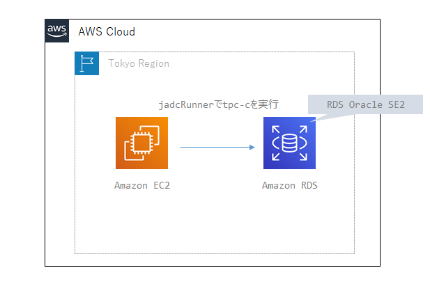
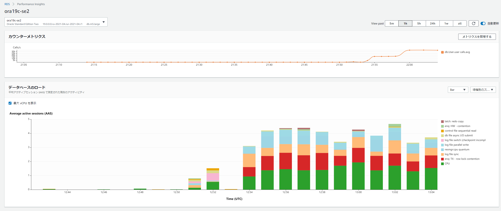

RDS OracleにJDBCRunnerを実行
概要図
図にするまでも無かったが、EC2上に配置したjdbcRunnerからRDS Oracle SE2に対してTPC-Cベースの負荷掛けを実施

jdbcRunnerを使用した負荷テストの流れや構成、動作については下記参照
jdbcRunnerのダウンロード
下記からjdbcrunner-1.3.zipをダウンロードしてEC2にアップロードする。
jdbcRunnerのセットアップ、事前準備
javaのインストール
sudo yum -y install java-1.8.0-openjdk.x86_64
jdbcrunnerの配置
unzip jdbcrunner-1.3.zip
cd jdbcrunner-1.3
クラスパスの設定
export CLASSPATH=/home/ec2-user/jdbcrunner-1.3/jdbcrunner-1.3.jar:/usr/lib/oracle/18.3/client64/lib/ojdbc8.jar
tnsnames.oraの確認
適切に設定されていること
cat $ORACLE_HOME/network/admin/tnsnames.ora
スクリプトの修正
cd /home/ec2-user/jdbcrunner-1.3/scripts
vi tpcc_load.js
vi tpcc.js
既存のjdbcurlを下記の通り修正
#var jdbcUrl = "jdbc:oracle:thin:@//サーバのパブリックIPアドレス:1521/サービス名";
var jdbcUrl = "jdbc:oracle:thin:@//ora19c-se2.xxxxx.ap-northeast-1.rds.amazonaws.com:1521/ora19c";
実行ユーザの作成
sqlplus oracle@ora19c
drop user tpcc cascade;
drop tablespace tpcc;
create tablespace tpcc datafile autoextend on next 1g maxsize unlimited;
CREATE USER tpcc DEFAULT TABLESPACE tpcc IDENTIFIED BY tpcc;
GRANT CREATE SESSION, CREATE TABLE, UNLIMITED TABLESPACE TO tpcc;
jadcRunnerの実行
テストデータのロード
cd /home/ec2-user/jdbcrunner-1.3/scripts
java JR tpcc_load.js
スケールファクターを指定しないデフォルトだとざっくりと1.5GB程度データが入る模様
NAME STATUS TYPE EXTMGT ALLOC INIT_KB SEGMGT USED(MB) TOTAL(MB) USED(%
--------------- --------- --------------------- ---------- --------- ---------- ------ ------------ ------------ ------
RDSADMIN ONLINE PERMANENT LOCAL SYSTEM 64 AUTO 6.5 7.0 92.9
SYSAUX ONLINE PERMANENT LOCAL SYSTEM 64 AUTO 375.7 400.0 93.9
SYSTEM ONLINE PERMANENT LOCAL SYSTEM 64 MANUAL 493.7 500.0 98.7
TEMP ONLINE TEMPORARY LOCAL UNIFORM 1024 MANUAL 164.0 200.0 82.0
TPCC ONLINE PERMANENT LOCAL SYSTEM 64 AUTO 1,527.3 2,148.0 71.1
UNDO_T1 ONLINE UNDO LOCAL SYSTEM 64 MANUAL 2,421.0 2,430.0 99.6
USERS ONLINE PERMANENT LOCAL SYSTEM 64 AUTO 68.1 1,980.6 3.4
7 rows selected.
スケールファクターを指定する場合は下記を参照。
https://dbstudy.info/jdbcrunner/docs_ja/tpc-c.html
-param0を指定することによって、スケールファクタを変更することが可能です。スケールファクタ1あたりwarehouseテーブルのレコード数が1増加し、その他のテーブルについてもレコード数が以下のように増加します。デフォルトのスケールファクタは16です。
Table Records warehouse sf x 1 district sf x 10 customer sf x 30,000 history sf x 30,000 item 100,000 stock sf x 100,000 orders sf x 30,000 new_orders sf x 9,000 order_line sf x 300,000 (approx.)
下記の例だと8並列でデータロードを実行して、スケールファクターは100となる。デフォルトと比べると約5倍のデータ量となる（はず）
java JR tpcc_load.js -nAgents 8 -param0 100
負荷テスト
cd /home/ec2-user/jdbcrunner-1.3/scripts
java -server JR tpcc.js
動作を変更したい場合は下記を参照しつつ、実行時のパラメータを変更する。tpccの場合、デフォルト値は、nAgentsは16、measurementTimeは15分（900秒）、warmupTimeは300秒となるので、変えるならばこのあたりかと思う。
cd /home/ec2-user/jdbcrunner-1.3/scripts
java -server JR tpcc.js -warmupTime 5 -nAgents 10 -measurementTime 60
-warmupTime：ウォームアップ時間。バッファ上にキャッシュが溜まってから測定するようにする。
-nAgents：並列度
-measurementTime：測定時間
結果
22:13:07 [INFO ] [Progress] 898 sec, 263,277,28,27,27 tps, 237424,237414,23742,23744,23743 tx
22:13:08 [INFO ] [Progress] 899 sec, 274,264,25,28,26 tps, 237698,237678,23767,23772,23769 tx
22:13:09 [INFO ] [Progress] 900 sec, 260,277,27,22,30 tps, 237958,237955,23794,23794,23799 tx
22:13:09 [INFO ] [Total tx count] 237958,237955,23794,23794,23799 tx
22:13:09 [INFO ] [Throughput] 264.4,264.4,26.4,26.4,26.4 tps
22:13:09 [INFO ] [Response time (minimum)] 2,2,0,17,1 msec
22:13:09 [INFO ] [Response time (50%tile)] 38,7,3,81,9 msec
22:13:09 [INFO ] [Response time (90%tile)] 63,14,5,111,15 msec
22:13:09 [INFO ] [Response time (95%tile)] 70,23,6,132,17 msec
22:13:09 [INFO ] [Response time (99%tile)] 93,50,8,184,22 msec
22:13:09 [INFO ] [Response time (maximum)] 478,429,208,445,135 msec
22:13:09 [INFO ] < JdbcRunner SUCCESS
結果の見方
https://dbstudy.info/jdbcrunner/docs_ja/tpc-c.html
TPC-Cでは5種類のトランザクションが定義されており、結果は左からNew-Order、Payment、Order-Status、Delivery、Stock-Levelトランザクションのものとなっています。
TPC-CのスコアにはNew-Orderトランザクションの1分あたりの実行回数を用いることが多いです。上記の例では15分間で42,727txですから、スコアは2,848.5tpmとなります。
実行時のPerformace Insigthsの画面。


関連しているかもしれない記事
- RDS(Oracle)にData Pumpでインポートする
- awslabsのpg-collectorについて
- RDS Oracleで拡張Varchar型の設定を行う
- RDS Oracleでロックされているテーブルのセッションをkill
- Oracle Partiotionオプションの代替策(View+Trigger)を試してみる